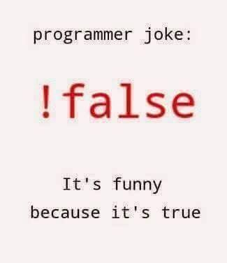

## Математическая логика и теория алгоритмов
Логика высказываний. Определения
**Логика высказываний** — это фундаментальный раздел формальной логики, изучающий логические связи между **простыми высказываниями** и способы построения из них **сложных (составных) высказываний** с помощью **логических операций**.
Основные понятия
### Простое высказывание Это **декларативное утверждение**, которое может быть либо **истинным (true, 1)**, либо **ложным (false, 0)**, но не тем и другим одновременно. Примеры простых высказываний: - «Снег белый» (истинно) - «2 + 2 = 5» (ложно) - «Сегодня вторник» (истинность зависит от контекста)
### Составное (сложное) высказывание Формируется из простых высказываний с помощью **логических связок** (операций). Пример: «Если идет дождь, то на улице мокро» (состоит из двух простых высказываний, соединенных связкой «если..., то...»).
## Логические операции 1. **Конъюнкция (И, ∧)** - A ∧ B 2. **Дизъюнкция (ИЛИ, ∨)** - A ∨ B 3. **Инверсия (НЕ, ¬)** - ¬A 4. **Импликация (→)** - A → B 5. **Эквиваленция (↔)** - A ↔ B 6. **Исключающее ИЛИ (⊕)** - A ⊕ B 7. **Штрих Шеффера (|)** - A | B 8. **Стрелка Пирса (↓)** - A ↓ B 9. **Условная дизъюнкция**
**Пример:** - A: «Я купил хлеб» - B: «Я купил молоко» Тогда конъюнкция **A ∧ B** («Я купил хлеб и молоко») будет истинна только в одном случае: если я действительно купил и то, и другое. Если я купил только хлеб, только молоко или ничего не купил — высказывание ложно.
**Пример:** - A: «Сегодня идет дождь» - B: «Сегодня светит солнце» Тогда дизъюнкция **A ∨ B** («Сегодня идет дождь или светит солнце») истинна, если выполнено хотя бы одно условие — идет дождь ИЛИ светит солнце (включая случай, когда верно и то, и другое).
**Пример:** - A: «Число четное» - B: «Число делится на 2 без остатка» Эквиваленция **A ↔ B** («Число четное тогда и только тогда, когда оно делится на 2») истинна всегда, так как эти утверждения неразличимы по смыслу.
**Пример:** - A: «На улице тепло» Тогда инверсия **¬A** («На улице **не** тепло») будет истинна, когда на улице холодно, и ложна, когда на улице тепло.
**Пример:** - A: «Ты сдал экзамен» - B: «Ты получишь стипендию» Импликация **A → B** («Если ты сдал экзамен, то получишь стипендию») будет ложной только если ты экзамен сдал, но стипендию не получил. Если экзамен не сдан (A ложно), то обещание не нарушено, независимо от того, получил ты стипендию или нет.
**Пример:** - A: «Пойду в кино» - B: «Пойду в театр» **A ⊕ B** («Пойду или в кино, или в театр») будет истинным, если я выберу что-то одно. Оно будет ложным, если я пойду в оба места (и кино, и театр) или не пойду никуда.
**Пример:** - A: «Идет прямой поезд» - B: «Нужно сделать пересадку» «A или B, если не A»: «Поеду прямым поездом, **а если его нет** (не A), то сделаю пересадку (B)». Ложь будет только в случае, когда прямого поезда нет (¬A истинно), но пересадку я делать не буду (B ложно).
**Пример:** - A: «Завтра будет дождь» - B: «Завтра будет снег» **A ↓ B** («Ни завтра не будет дождя, ни снега») будет истинно только в ясный, сухой день. Если выпадут любые осадки, высказывание станет ложным.
**Пример:** - A: «Дверь закрыта» - B: «Дверь заперта» **A | B** («Неверно, что дверь и закрыта, и заперта») будет ложным, только если дверь действительно закрыта *и* заперта. Если она открыта, или закрыта, но не заперта, или вообще снята с петель — высказывание истинно. Эта операция фундаментальна для построения электронных схем (вентиль NAND).
Алгоритмы. Определения
**Алгоритм** — это конечная, точная, детерминированная последовательность инструкций (шагов), предназначенная для решения конкретного класса задач или выполнения вычислений.
**Сложность алгоритма** — это количественная характеристика, описывающая зависимость ресурсов (времени выполнения или используемой памяти), необходимых алгоритму, от размера входных данных.
Виды сложности
**Временная сложность (Time Complexity)** Оценивает количество элементарных операций, выполняемых алгоритмом. Измеряется в "нотации О большого" (Big O notation) Примеры: - O(1) — постоянное время (доступ к элементу массива по индексу) - O(n) — линейное время (поиск в неотсортированном массиве) - O(n²) — квадратичное время (пузырьковая сортировка)
**Пространственная сложность (Space Complexity)** Оценивает объем памяти, требуемый алгоритмом. Также измеряется в нотации О большого. Примеры: - O(1) — алгоритм использует фиксированный объем памяти - O(n) — алгоритм использует память, пропорциональную размеру входных данных
**Асимптотическая сложность** Описывает поведение алгоритма при стремлении размера входных данных к бесконечности. Основные асимптотические обозначения: - O(f(n)) — верхняя граница (худший случай) - Ω(f(n)) — нижняя граница (лучший случай) - Θ(f(n)) — точная оценку (совпадают верхняя и нижняя границы)
Алгоритмы сортировок
### Сортировка пузырьком (Bubble Sort) - **Принцип:** Многократный проход по массиву с попарным сравнением и обменом соседних элементов - **Сложность:** O(n²) в худшем и среднем случае, O(n) в лучшем случае - **Память:** O(1) - **Особенности:** Простая реализация, низкая эффективность на больших данных
### Сортировка выбором (Selection Sort) - **Принцип:** На каждом проходе находится минимальный элемент и помещается в начало отсортированной части - **Сложность:** O(n²) во всех случаях - **Память:** O(1) - **Особенности:** Минимальное количество обменов (O(n))
### Сортировка вставками (Insertion Sort) - **Принцип:** Элементы по одному перемещаются в отсортированную часть массива - **Сложность:** O(n²) в худшем и среднем случае, O(n) в лучшем - **Память:** O(1) - **Особенности:** Эффективна на небольших массивах и почти отсортированных данных
### Быстрая сортировка (Quick Sort) - **Принцип:** Разделение массива на две части относительно опорного элемента и рекурсивная сортировка частей - **Сложность:** O(n log n) в среднем случае, O(n²) в худшем - **Память:** O(log n) в среднем случае - **Особенности:** Один из самых быстрых алгоритмов на практике, нестабильный
### Сортировка слиянием (Merge Sort) - **Принцип:** Рекурсивное разделение массива пополам, сортировка частей и их слияние - **Сложность:** O(n log n) во всех случаях - **Память:** O(n) - **Особенности:** Гарантированная сложность, устойчивая, требует дополнительной памяти
Мемы

## Спасибо за внимание!
.jpg)